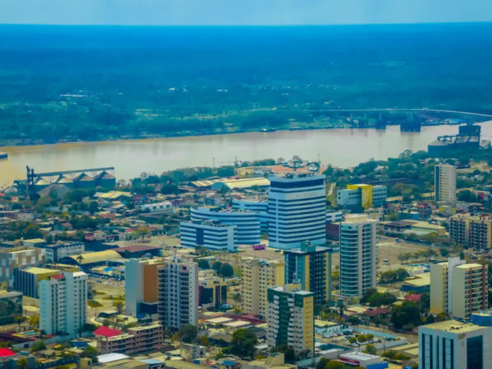

O Rondônia é um estado localizado na Região Norte do Brasil, conhecido por sua forte ligação com a Floresta Amazônica e por sua importância no desenvolvimento econômico da Amazônia brasileira. O estado possui uma rica diversidade natural, formada por rios, áreas de preservação e grande variedade de fauna e flora. Sua capital, Porto Velho, destaca-se como principal centro urbano e econômico da região. Rondônia tem sua economia baseada principalmente na agropecuária, na produção de energia hidrelétrica e no extrativismo, além de apresentar uma cultura marcada pela mistura de diferentes povos e tradições que contribuíram para a formação do estado ao longo do processo de ocupação da Amazônia.

Voltar